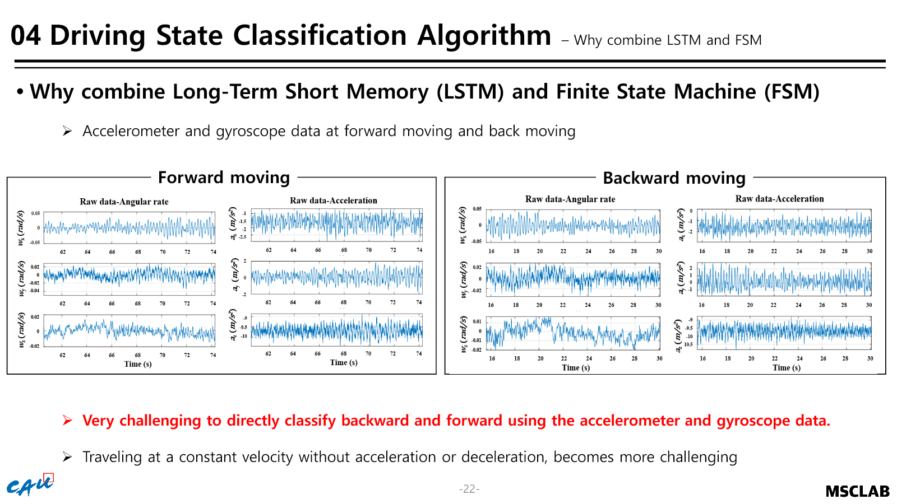
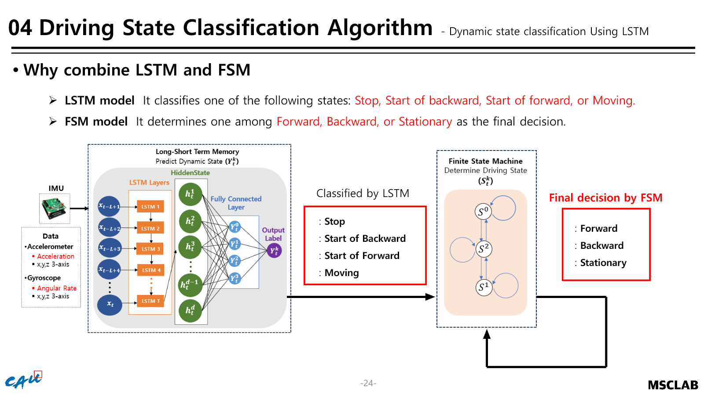
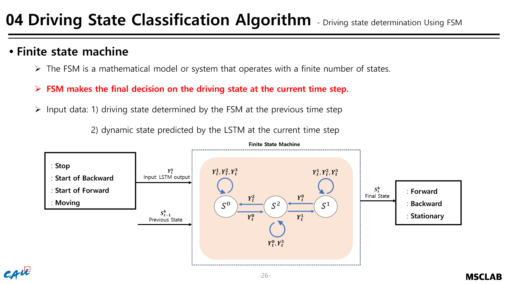
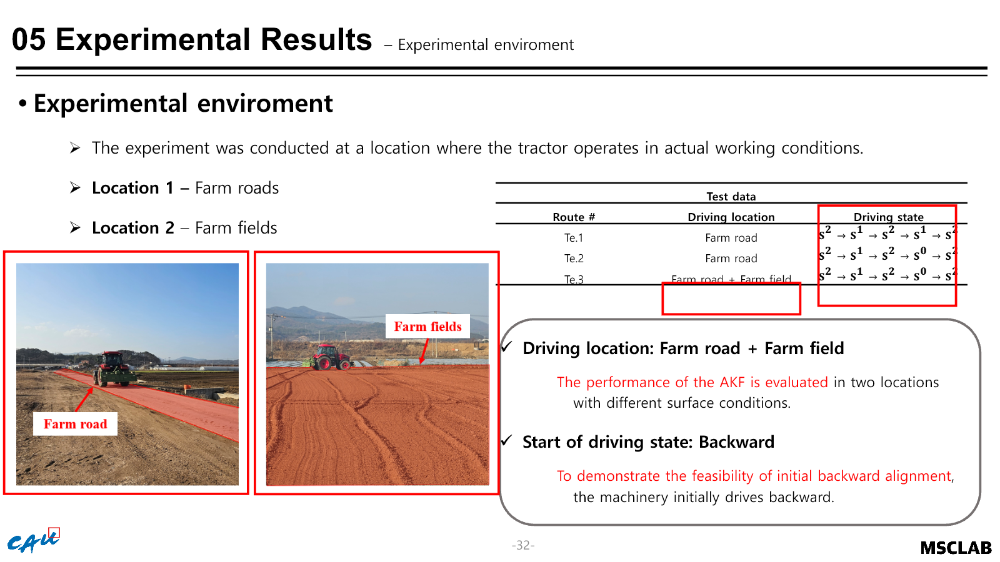
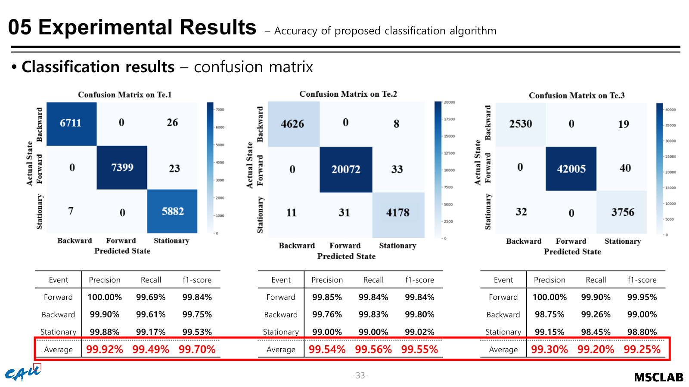
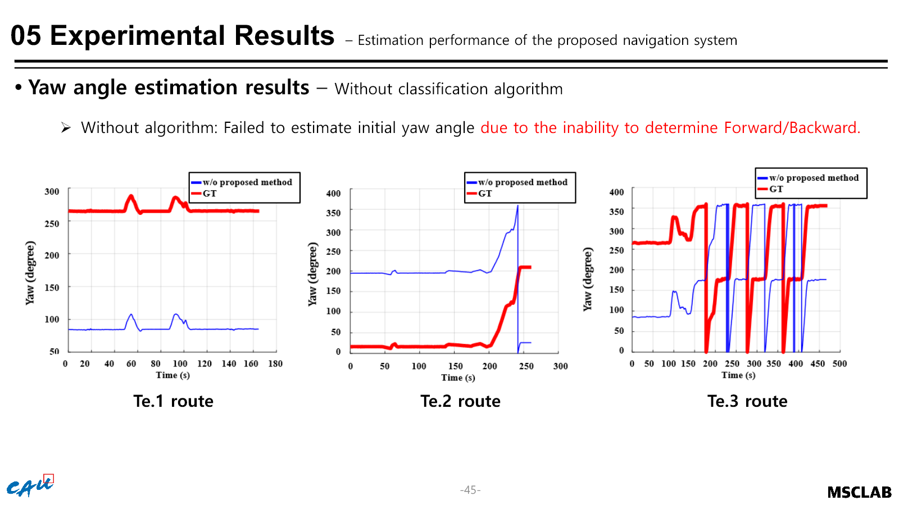
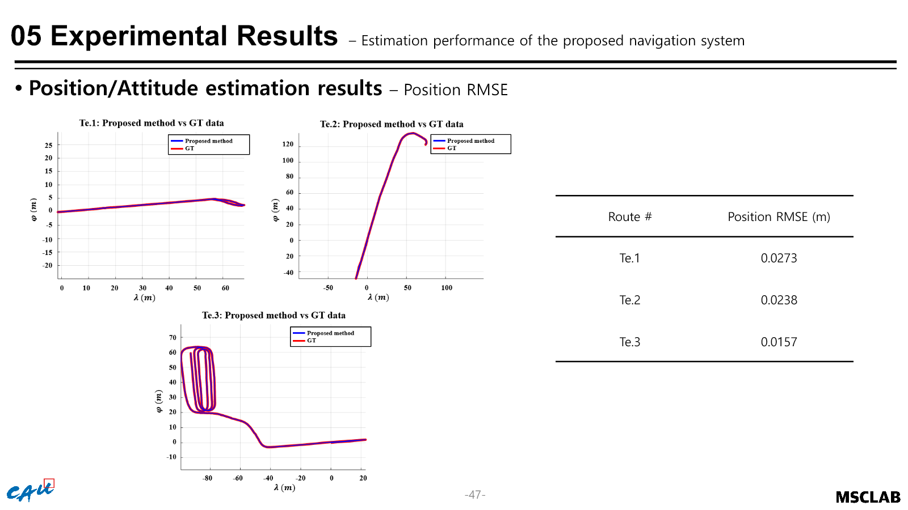
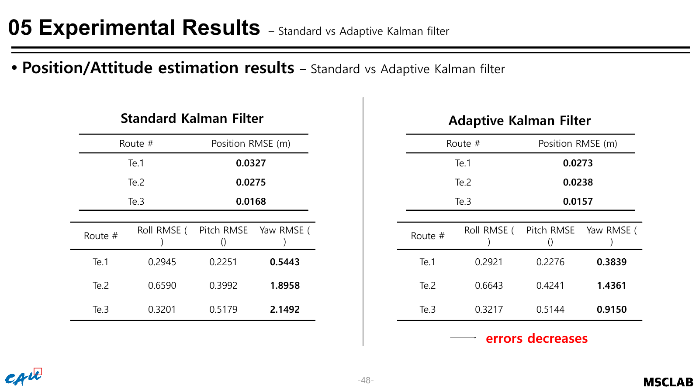

SCIE JOURNAL · INERTIAL NAVIGATION
IMU 기반 LSTM-FSM 주행상태 판별
기어·브레이크 신호를 사용할 수 없는 반자율 트랙터에서 IMU 시계열만으로 전진·후진·정지 판별. LSTM 순간 예측과 물리적 상태전이 규칙을 결합해 항법 전환 오류 억제.
- 기간
- 2024.06–2025.08
- 담당
- LSTM 학습 · FSM · ROS 연동
- 기술
- IMU · LSTM · FSM · Kalman Filter
- 성과
- 평균 F1 99.25% · Measurement
01 / PROBLEM
판별 조건
농경지 진동과 출발 전환 잡음이 겹치는 환경에서 단순 임계값은 정지와 이동을 안정적으로 분리하지 못하며, IMU 가속도만으로 일정 속도의 전진과 후진을 직접 구분하기도 어려운 조건.

02 / DESIGN
LSTM-FSM


- 입력IMU 가속도·각속도 시퀀스 구성
- 순간 예측LSTM 기반 전진 시작·후진 시작·정지/이동 분류
- 상태 검증이전 상태와 가능한 전환 관계를 반영한 FSM
- 오류 억제상태 변경 구간의 일시적 선행·지연 예측이 연속 오판으로 전파되는 현상 차단
03 / NAVIGATION
항법 연동
- 정지 판정ZVZARU 적용을 통한 속도·각속도 누적오차 억제
- 주행 판정적응형 Kalman Filter의 IMU·GPS 결합에 상태정보 전달
- 시스템ROS 노드 기반 분류기-항법 모듈 연동
- 검증농경제·농로 실차 데이터 수집과 기준 궤적 비교

04 / RESULT
분류 결과
99.25%
전진·후진·정지 평균 F1
LSTM 단독의 후진 F1 10–37% 수준 구간을 상태전이 규칙으로 안정화
| 주행상태 | 최종 F1 | 판별 의미 |
|---|---|---|
| 전진 | 99.95% | 정상 주행 구간의 안정적 유지 |
| 후진 | 99.00% | LSTM 단독 혼동의 FSM 보정 |
| 정지 | 98.80% | 정지 검출의 항법 오차 억제 활용 |

05 / NAVIGATION RESULT
위치추정 영향


| 실차 구간 | 기존 위치 RMSE | 제안 방법 위치 RMSE |
|---|---|---|
| 농경제 경로 | 0.070 m | 0.0157 m |
| 농로 | 0.054 m | 0.0238 m |

06 / CONTRIBUTION
담당 범위
- IMU 데이터 전처리와 학습 시퀀스 구성
- LSTM 구조 선정·학습·평가
- 전진·후진·정지 FSM 전환 규칙 설계
- ROS 환경의 분류 결과와 항법 모듈 연동
- 실차 데이터 수집과 성능 분석
- Measurement 논문의 주행상태 분류 파트 작성·공동저자 참여